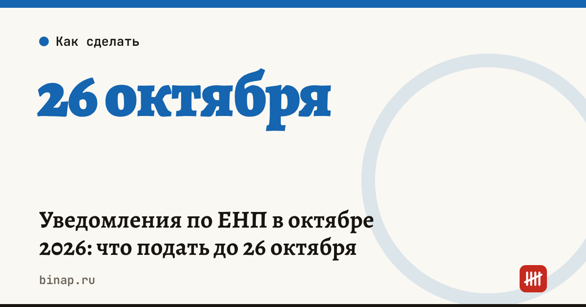

Уведомления по ЕНП в октябре 2026: что подать до 26 октября

Уведомление по авансу УСН за 9 месяцев подают до 26 октября, а деньги должны быть на ЕНС до 28 октября. Обычный срок уведомления — 25-е число, но в 2026 году 25 октября выпадает на воскресенье.
Сроки октября:
| Что | Уведомление | Уплата |
|---|---|---|
| Аванс по УСН за 9 месяцев | 26 октября | 28 октября |
| Аванс по НДФЛ ИП на ОСНО за 9 месяцев | 26 октября | 28 октября |
| Авансы по налогу на имущество организаций | 26 октября | 28 октября |
| НДФЛ с зарплаты, удержанный 1–22 октября | 26 октября | 28 октября |
| НДФЛ с зарплаты, удержанный 23–31 октября | 3 ноября | 5 ноября |
| Страховые взносы за сентябрь | не нужно | 28 октября |
Когда уведомление не нужно. Если аванс вышел нулевым — например, ИП без сотрудников полностью уменьшил его на взносы. По взносам за сентябрь уведомление в октябре тоже не подают: их срок совпадает со сроком расчёта по взносам, так что достаточно заплатить до 28 октября.
Коды отчётного периода в уведомлении: НДФЛ за 1–22 октября — 34/01; аванс по УСН за 9 месяцев и имущественные налоги за III квартал — 34/03; НДФЛ за 23–31 октября — 34/11 (по разъяснению УФНС).
Если ваш товар пострадал при атаках на склады. Для пострадавших от атак на объекты групп «РВБ» (Wildberries) и «Интернет Решения» (Ozon) сроки авансов по УСН и НДФЛ, которые приходятся на август 2026 — июль 2027 года, продлены на 12 месяцев (постановления Правительства от 25.08.2026 № 1074 и от 30.09.2026 № 1277).
Что будет, если не подать. Штрафа за опоздание, неподачу или ошибку в уведомлении нет. Но без уведомления налоговая не распределит деньги с ЕНС в счёт налога — и начислит пени.
Что сделать сейчас:
- Посчитайте аванс за 9 месяцев и уменьшите его на уплаченные взносы. Как — в разборе «Аванс по УСН за 9 месяцев».
- Подайте уведомление до 26 октября через бухгалтерский сервис или личный кабинет.
- Проверьте сальдо ЕНС и пополните счёт так, чтобы 28 октября деньги уже были там.
Частые вопросы
Нужно ли уведомление при нулевом авансе? Нет.
Есть ли штраф за неподачу? Нет, но если из-за этого налог не спишется вовремя, начислят пени.